impressionism: 1874-1886
intro
during the 1860s, like-minded artists met in school, ateliers, and cafés in paris. oftentimes, these were artists who had gotten a classical education, but felt like it was inadequate for what they wanted to achieve. manet often went to these places, and since he had gotten good reviews from baudelaire and others, people kinda hurdled around him and saw him as an artistic leader. together they formed the batignolles group (basically just manet fans).
1863. a lot of paintings (about 3/5) are refused at the salon, lots of them by later famous impressionists. napoleon III apparently said “they all look the same to me” (no proof that this happened but it's kinda funny) and allowed for a secondary salon to be held, "le salon des refusés".
in 1874, they decided to hold their own exhibition, held in the home of nadar. many people came, though mainly to point and laugh. leroy, a critic, especially laughed at "impression, soleil levant" of monet and called the group "impressionists" (derogatory). the name stuck though so everyone say thanks to leroy bc otherwise we'd probably still be calling them the batignolles group.
the second exhibition was met with violence and cops had to interfere. during their eight exhibition in 1886, a change started to show. seurat’s work announced a new style, which showed a more systematic approach to light: postimpressionism was born.
that year is the official end date of impressionism, but painters like monet keep working in the same style until long after that.
- they mix colours as little as possible.
- very short brushstrokes
- they paint in open air in the moment itself (or want you to believe they do)
- small canvases
- no outlines, clair-obscur or clear details
- influenced by photography and japanese art

artists & their work
édouard manet
short biographyfanboy of spanish people and art i guess. he's the bridge between realism and impressionism, though he never joined the expositions of the latter. he craved recognition of the salon, but usually provocated them without wanting to.
he often painted outside (morisot had encouraged him to) and his works are usually very flat, without depth.
fun fact zola and monet carried him to his grave! bestie goals
a bit pretentious but also i get him i think. idk. kind of a tryhard???? sorry lol not the biggest fan but he has some nice works!
his works
olympia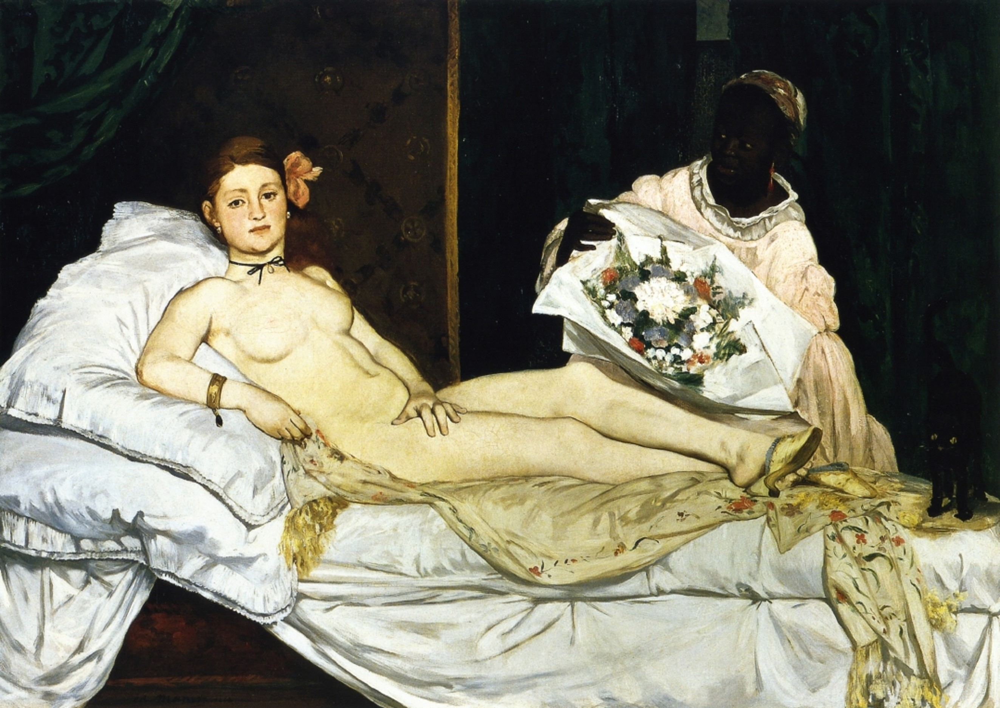 a pose resembling the venus of titian, but the subject is a regular woman - victorine meurent. her outfit, the cat & the many flowers (symbol for feminine sexuality) present suggest she was a sexworker. apparently female sexworkers in france were often nicknamed olympia during that time, if i remember correctly. due to the lack of allegorical context (aka it being a regular woman an not maria magdalen or a godess or something) people did Not like it.
the black maid, modelled by laure, is often overlooked. we sadly didn't really discuss her in class and i don't want to accidentally say anything wrong, so here are some sources!
olympia (wikipedia) / lorraine o'grady: olymia's maid (article, pdf) / denise murrell: posing modernity (wikipedia) / denise murrell: seeing laure (dissertation, pdf)
yasumasa morimura made a piece about this! he's a really cool artist :D you can find the images here. this is also a very good webpage about him and his work. it's in dutch so you might have to use a translator tool, but i did want to mention it :)
le dejeuner sur l'herbe (the lunch on the grass)
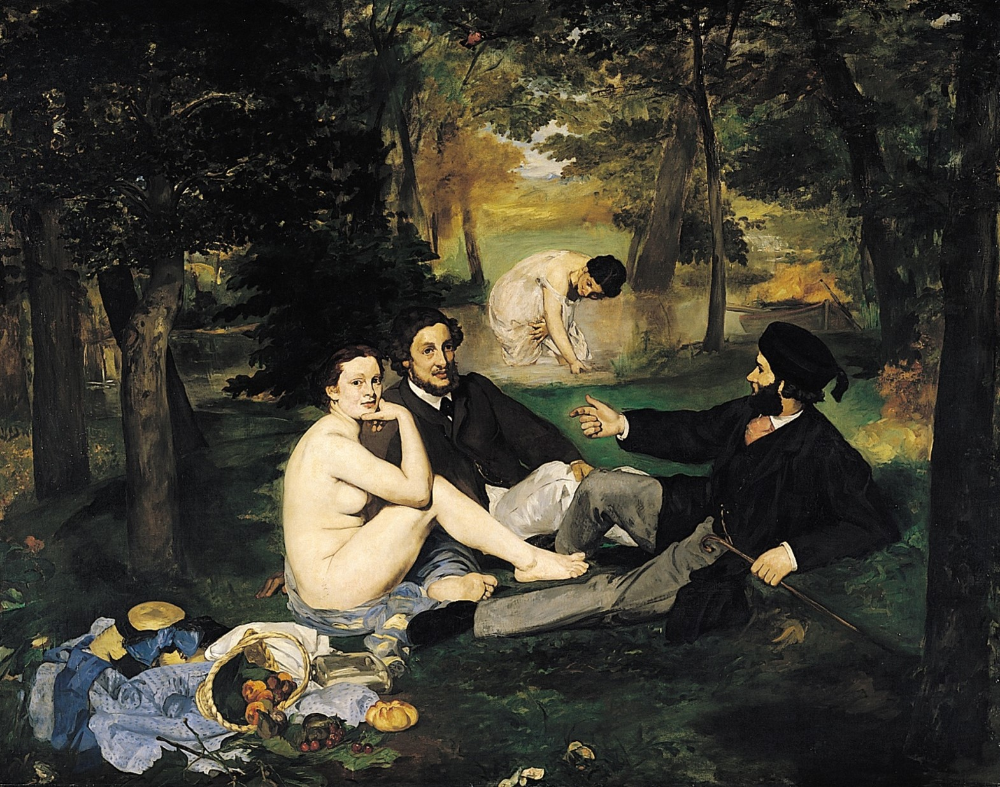 shocked the art world so hard that manet became world famous.
the perspective and proportions aren't quite correct (the woman in the back should be smaller, though i like to imagine she's a giant godess or something), depth is missing. the trees seem to block out the outside world. the subjects form a triangle & there are lots of parallel lines in the painting.
the poses are nearly identical to the judgement of paris of raimondi (based on a design by raphael), but again he did not have an allegorical context. the women in the painting are cocottes, mistresses of rich men.
{kind=link}
there's a frog in the bottom left corner, which, for critics, was proof that this wasn't a painting to honor a master painter, but a thought-through insult.
now it's seen as a historical turning point in the perception of female nudity in art!
l'execution de maximilien
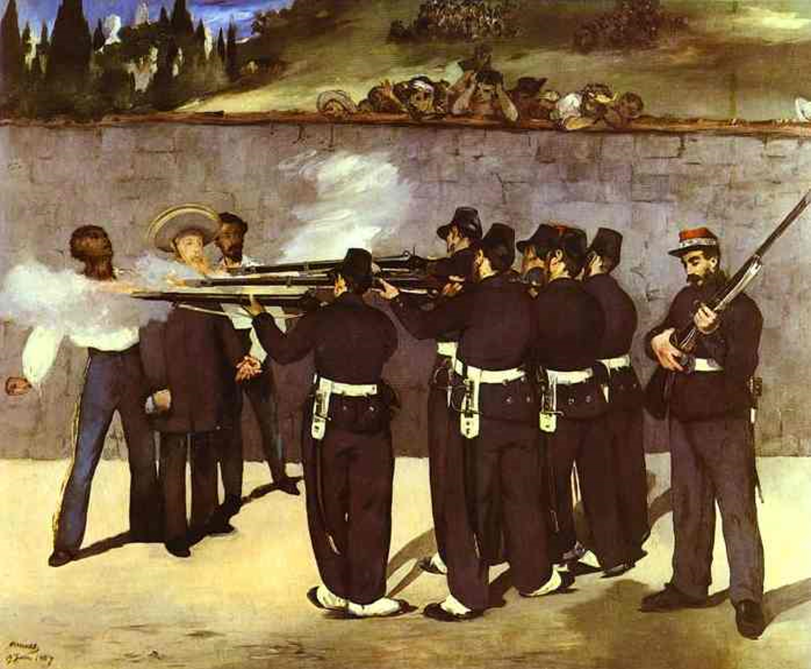 storytime! france made an austrian (maximilian) the ruler in mexico because of colonialism. eventually france went away but maximilian had to stay because yeah ruler and all that. the us supported mexico to execute maximilian (the monroe doctrine - they didn't want europe to have any business in america), which is one of the only good decisions the country made as far as i know. anyways, the french public thought france was at fault of the execution.
that's why the executioners are wearing french uniforms. maximilian has stigmata (wounds in his hands, like jesus had) because awwww poor colonizer :( /s
the two people next to him were conservative generals tomás mejía and miguel miramón.
there are some clear similarities with the third may of goya, and i definitely prefer goya's. idk it's more dramatic & i actually feel bad for the people being executed. maximilian had it coming.
FUN FACT there's actually a photograph of the execution! super cool (no gore!! they're just standing in formation, ready to shoot)
portrait de berthe morisot
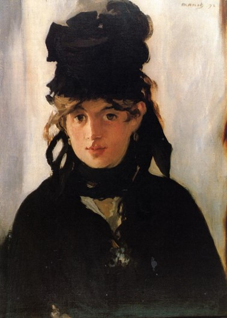 manet's bestie nr 2. she modelled for him often and they exchanged tips and tricks. manet was a big fan of spanish paintings and velázquez, which is why he made her look more "spanish" by giving her black clothing (the colour palet of impressionists was generally much lighter) and by giving her brown eyes (her eyes were green). kinda weird but nice painting!
un bar aux folies bergère
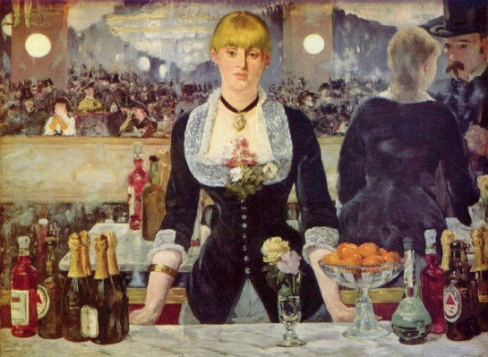 a painting that the salon actually liked? woah, didn't see that coming!
again he used a lot of black. some subjects are cut off, like in a photograph; for example, you can only see the feet of the trapeze artist on the top left.
suzon, the woman at the bar, seems lost in thought and lonely, but in the mirror you can see she's serving someone. manet moved the reflection in the mirror so you can see this interaction.
yasumasa morimura made two pieces about this! you can find the images here.
claude monet
short biographymonet!!! considered a "pure" impressionist because he always worked outside (or liked people to believe so) and kept working in the style until his death.
his main goal was to "catch the light" and show quick impressions of light and atmosphere in his paintings. he painted what he saw, not what he know was there.
his trademark is big strokes of colour instead of detailled forms. because of this, his paintings oftentimes look more realistic.
the older he got, the bigger the paintstrokes and the darker the colours. this evolution in style was because he had cataracts, an eye condition - in his case probably due to old age.
i love his works so so much!! HOWEVER. he cheated on his wife which is. not good. the french wikipedia page also mentions that he could be generous and kind one time and extrememly angry another time. i wouldn't want to meet him tbh. but yeah what did i expect from a guy who mainly lived in the 19th century
his works
impression, soleil levant (1872)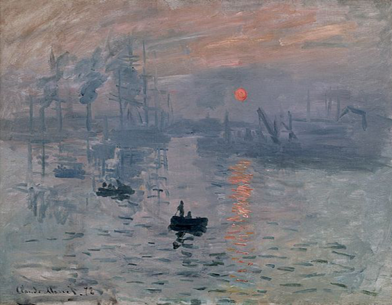 this work was shown on the first exhibition of the impressionists! originally monet named it impression (as he was told it couldn't pass as a view from le havre, where he painted it), and the guy making the catalogue for the exhibition added "soleil levant" - sunrise. later, when the work was being sold, the guy making the catalogue called it "impression, soleil couchant" - sunrise became sunset. this name was copied to a ton of publications, but through analysing the painting and the position of the sun and everything, people have concluded it's definitely a sunrise.
this is the painting that gave impressionism it's name! at first, "impressionist" was used as a derogatory term coined by a critic, and it stuck.
boulevard des capucines
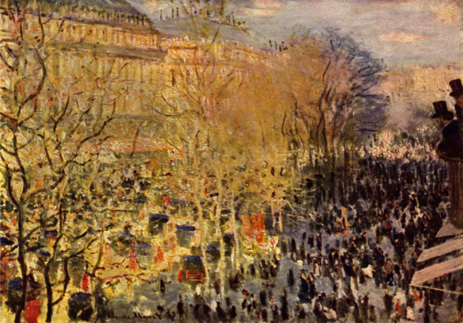 we didn't speak much about this work, i just think it's pretty :)
les nympheas
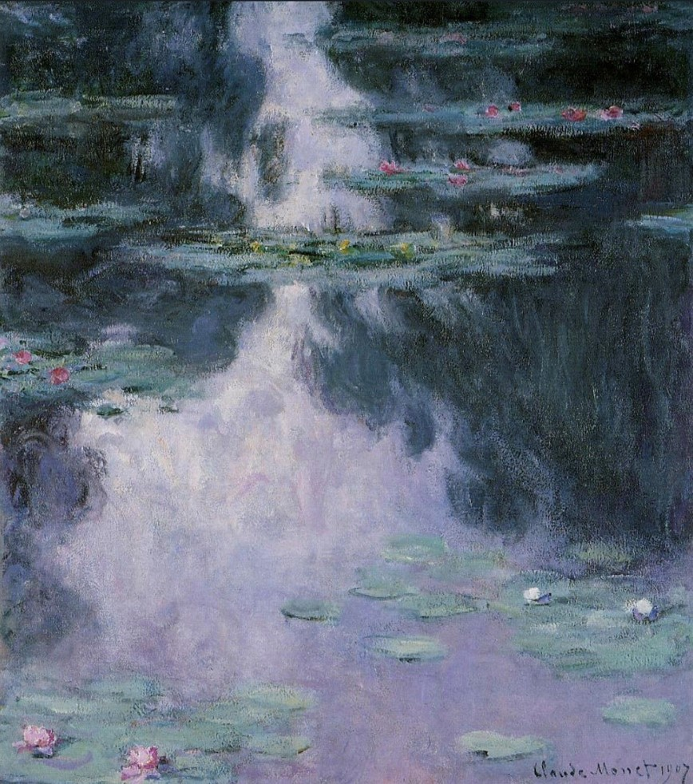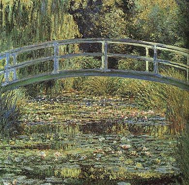 monet worked over 25 years on this series and made over 250 works, though the official series counts 8 works.
i don't have much else to say about these, they're just very nice!
la cathedrale de rouen
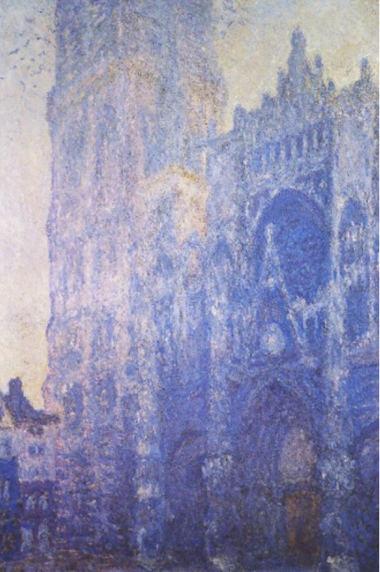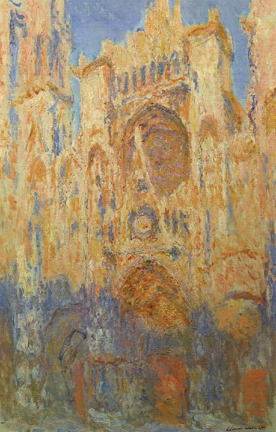 this was also a series, by which he painted in different positions on different times. monet worked in a room above a shop and not outside. only part of the cathedral is visible, because he also couldn't see the whole building from the window.
berthe morisot
short biographymorisot grew up in an artistic family. both her and her sister got painting lessons by paul chocarne, a genre painter. they both went to the louvre often to copy paintings. morisot became besties with manet and encouraged him to paint outside (and thus become more of an impressionist). she took part in the first exhibition of the impressionists (then still called "le groupe des battignoles") as the only woman.
her works are sometimes called "feminine", which is like. a weird thing to say. women weren't allowed to paint on the street or in a bar or wherever public, because it just wasn't accepted. that's why most female artists of that time period paint inside scenes, or in their own gardens.
i think her works are beautiful. they have a certain kind of warmth in them, and i get the feeling that she deeply cared about the subjects she painted. her paintings feel so much more personal, because she was only allowed to paint in those places.
her works
since my teacher just showed us her works and talked about her life (and didn't discuss her works), i'll just show some of my favourites until i find more information about them :)
self portrait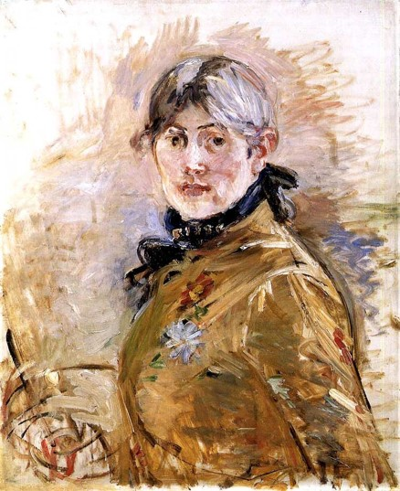very different from manets portrait of her, as you can see. tba
le berceau (the cradle)
 this is how it feels looking at a baby. i cant explain it thats just how it feels.
this is how it feels looking at a baby. i cant explain it thats just how it feels. young woman powdering her face
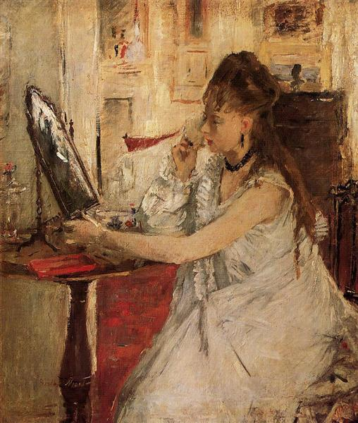this painting feels so warm. tba
mary cassatt
short biographyan american???? woahh.
she was close friends with degas, which is quite strange since she was a fighter for women's voting rights in america.
not the biggest fan (partly because of her being close with degas, though we also dont know if she actually liked his presence or not), it really depends on painting to painting. some paintings look quite stiff, while others feel more spontaneous.
her works
self portrait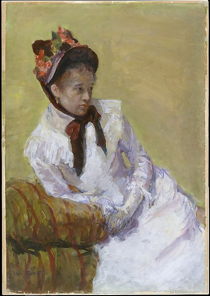
petite fille dans un fauteuil bleu
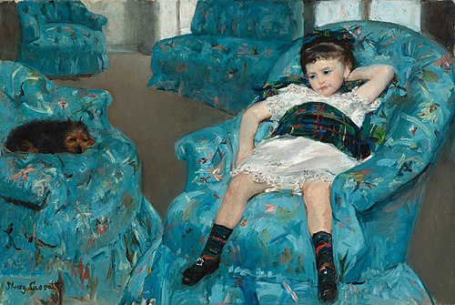 it's said degas corrected her perspective a bit in this painting, though theres no real proof of that iirc. maybe she did it herself, who knows.
in the loge
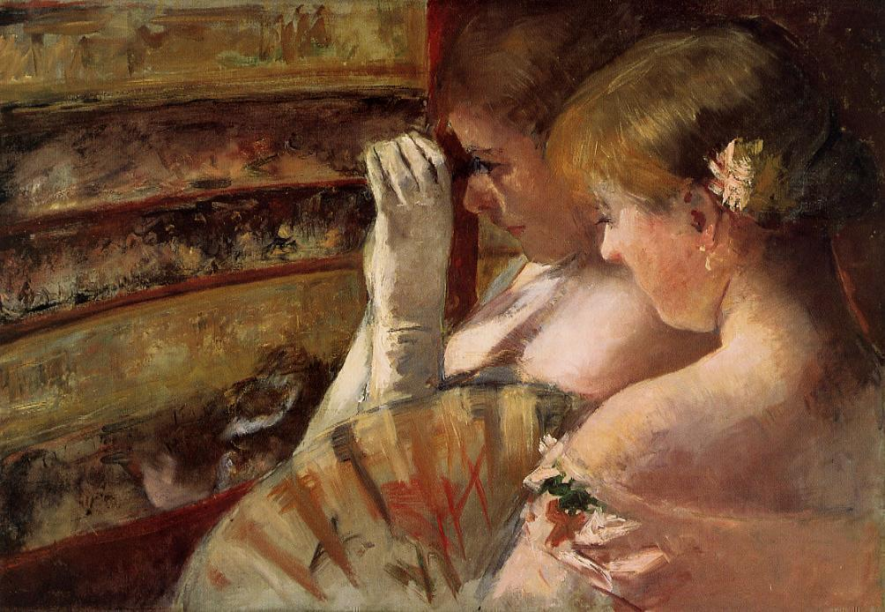 though women weren't allowed to paint in public spaces, the opera was seen as an okay place to paint.